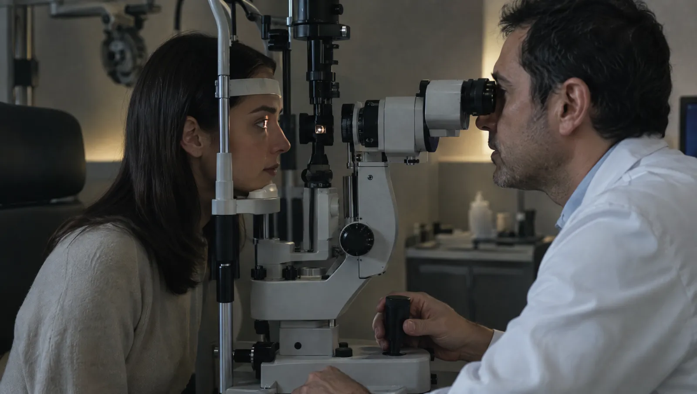

Bir göz muayenesi neleri kapsar?
Kapsamlı bir göz muayenesi yalnız numara ölçümünden ibaret değildir. Hekim önce görme keskinliğinize bakar, ardından göz tansiyonunu ölçer. Biyomikroskopla gözün ön kısmını, damlayla büyütülen göz bebeğinden de retina ve görme sinirini inceler. Böylece gözlük ihtiyacının yanında katarakt, glokom ve retina hastalıkları da erken fark edilir.
Göz hastalıklarının bir kısmı uzun süre belirti vermez. Örneğin glokom, görme alanını kenarlardan sinsice daraltır ve kişi bunu geç fark eder. Şeker hastalığı da yıllar içinde retinadaki damarlara zarar verebilir. Bu yüzden 40 yaşından sonra, diyabetiniz varsa ya da ailenizde glokom bulunuyorsa şikâyetiniz olmasa da düzenli kontrol önemlidir. Çocuklar için okul çağından önce en az bir göz muayenesi planlayın.

Gözünüzde bu değişiklikleri fark ettiyseniz
- Uzağı ya da yakını eskisi kadar net görememek
- Okurken satır kaçırma, göz yorgunluğu ve baş ağrısı
- Gözde kızarıklık, çapaklanma ya da batma hissi
- Işık etrafında halkalar görmek, gece görüşünde azalma
- Görüş alanında uçuşan noktalar ya da ışık çakmaları
- Çocuğunuzda gözlerden birinin kayması ya da ekrana çok yakından bakma
- Şeker hastalığı varsa yıllık retina kontrolü
- Gözlerde kuruluk, yanma ve sık sulanma
Acil durumBir gözde ani görme kaybı, görüşe perde iner gibi bir gölge, göze batan ya da kesen bir cisim veya bulantıyla gelen şiddetli göz ağrısında gecikmeyin. Göze kimyasal madde sıçradıysa gözü hemen bol suyla yıkayın, ardından 112'yi arayın veya beklemeden acile gelin.
Kırma kusurlarından retinaya göz hastalıkları
- Miyopi, hipermetropi ve astigmatizma
- Yakını görme güçlüğü (presbiyopi)
- Katarakt
- Glokom (göz tansiyonu)
- Diyabetik retinopati
- Yaşa bağlı sarı nokta hastalığı
- Kuru göz
- Alerjik ve mikrobik konjonktivit
- Arpacık ve şalazyon
- Şaşılık ve tembel göz
- Göz kapağı düşüklüğü
Gözün farklı katmanlarına bakan testler
Görme keskinliği ve refraksiyon ölçümü
Harf tablosu ve otomatik ölçüm cihazıyla gözlük numaranız belirlenir. Çocuklarda göz bebeğini büyüten damlayla yapılan ölçüm daha güvenilirdir.
- Süre
- 10-15 dakika
- Hazırlık
- Kontakt lens kullanıyorsanız hekiminizin söylediği süre kadar önce çıkarın
Göz tansiyonu ölçümü
Göz içi basıncını ölçer. Yüksek basınç, glokom için önemli bir risk işaretidir.
- Süre
- Birkaç dakika
- Hazırlık
- Hazırlık gerekmez
Göz dibi muayenesi
Damlayla büyütülen göz bebeğinden retina, sarı nokta ve görme siniri incelenir. Şeker ve tansiyon hastalarında yılda en az bir kez önerilir.
- Süre
- Damlanın etkisi için 30-45 dakika bekleme
- Hazırlık
- Bulanıklık birkaç saat sürer; araç kullanmayın, güneş gözlüğü getirin
Görme alanı testi
Ekranda beliren ışıkları gördükçe düğmeye basarsınız. Glokomun kenar görmede yaptığı kaybı haritalar.
- Süre
- Her göz için 5-10 dakika
- Hazırlık
- Yakın gözlüğünüzü getirin
OCT (optik koherens tomografi)
Işık dalgalarıyla retinanın katmanlarını kesit kesit görüntüler. Sarı nokta hastalıkları ve glokom takibinde ayrıntı sağlar.
- Süre
- 5-10 dakika
Katarakt ameliyatı
Bulanıklaşan doğal mercek çıkarılır, yerine göz içi lens yerleştirilir. Genellikle damla ya da lokal uyuşturmayla ve günübirlik yapılır.
- Hazırlık
- Lens gücü ölçümleri ve kan tahlilleri ameliyattan önceki bir günde yapılır
Göz muayenesi gününü planlarken
- Göz dibi muayenesi olacaksa o gün araç kullanmayın
- Kullandığınız gözlüğü ve varsa lens kutusunu getirin
- Damlalarınızın adlarını yazın ya da şişelerini yanınıza alın
- Muayeneye makyajsız, özellikle rimelsiz gelin
- Şeker hastasıysanız son HbA1c sonucunuzu getirin
Göz Hastalıkları hekimleri

Görme ve göz sağlığı soruları
Göz bebeğini büyüten damladan sonra ne kadar bulanık görürüm?
Bulanıklık ve ışığa hassasiyet çoğunlukla 4-6 saat sürer, kişiden kişiye değişir. Bu sürede araç kullanmayın, güneş gözlüğü takın ve yakın okumayı zorlamayın. Mümkünse yanınızda bir refakatçi olsun.
Katarakt ameliyatı için kataraktın olgunlaşmasını beklemek gerekir mi?
Hayır, kataraktın sertleşmesini beklemek artık gerekli görülmüyor. Ameliyat zamanını, bulanık görmenin günlük hayatınızı ne kadar etkilediği belirler. Örneğin araba kullanmak, okumak ya da yüzleri tanımak zorlaştıysa hekiminizle ameliyatı konuşabilirsiniz. Öte yandan çok ilerlemiş katarakt ameliyatı teknik olarak zorlaştırabilir. Bu yüzden şikâyetiniz arttığı halde yıllarca ertelemek doğru değildir. Kararı göz dibi bulgularınız ve diğer ölçümlerle birlikte hekiminiz verir.
Göz tansiyonu belirti vermeden ilerleyebilir mi?
Evet. Glokomun sık görülen tipi ağrı ya da kızarıklık yapmaz. Görme kaybı kenarlardan başlar ve merkez görme uzun süre korunduğu için kişi bunu fark etmez. Kaybedilen görme alanı geri gelmez. Bu nedenle 40 yaşından sonra düzenli göz tansiyonu ölçümü, ailede glokom varsa daha erken kontrol önemlidir.
Çocuğumun ilk kapsamlı göz muayenesi ne zaman olmalı?
Okula başlamadan önce, 3-4 yaş civarında kapsamlı bir muayene önerilir. Tembel göz erken yakalandığında tedaviye çok daha iyi yanıt verir. Gözde kayma, ışığa aşırı hassasiyet ya da göz bebeğinde beyazlık fark ederseniz bu yaşı beklemeyin.
Bilgisayar başında gözlerim neden kuruyor?
Ekrana odaklandığınızda göz kırpma sayınız belirgin biçimde azalır. Gözyaşı tabakası incelir; batma, yanma ve bulanıklık başlar. Her 20 dakikada bir 20 saniye uzağa bakmak ve ekranı göz hizasının biraz altına almak rahatlatır. Şikâyet bu önlemlerle geçmiyorsa muayene gerekir.
Bu sayfayı Op. Dr. Gökhan Tekin gözden geçirdi. Son güncelleme: 7 Ekim 2026.